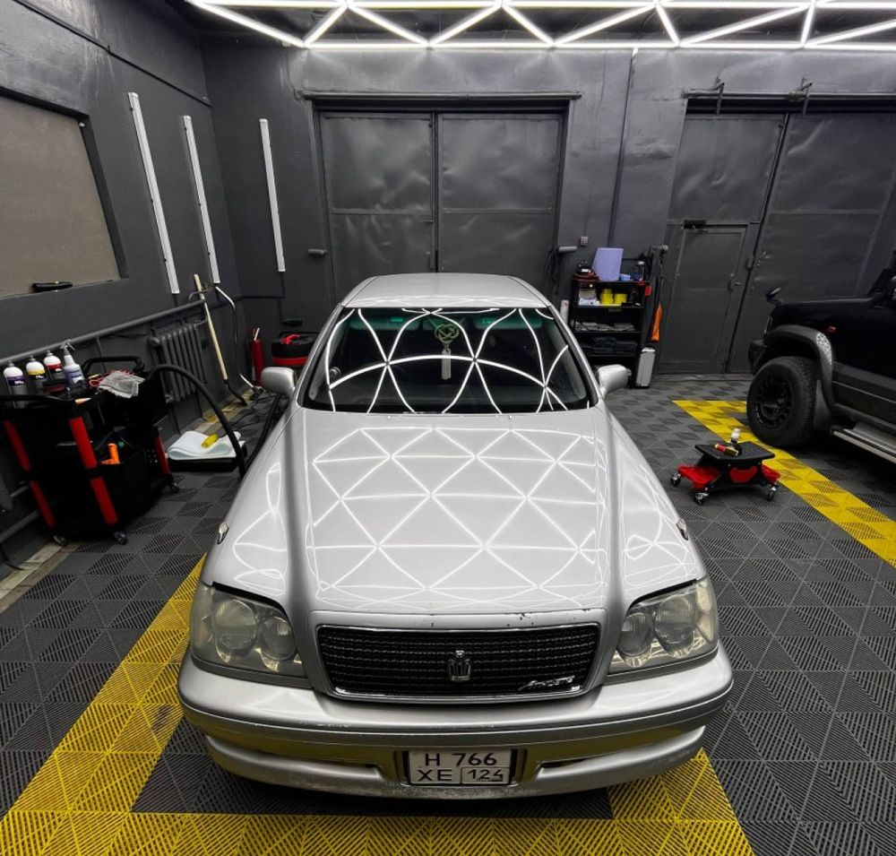
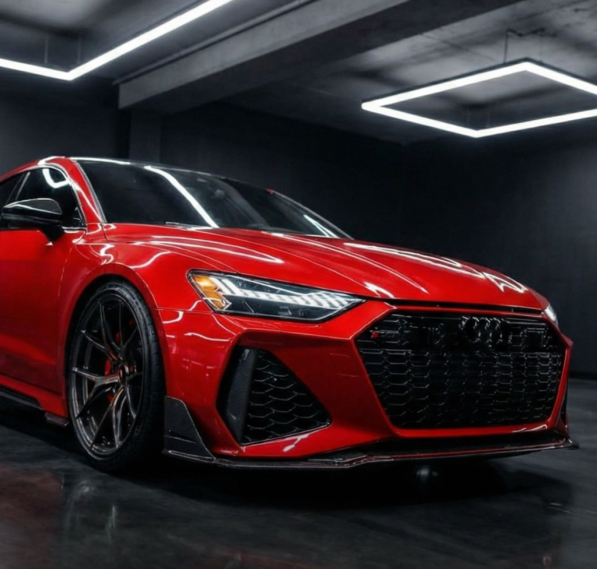

Оклейка защитной плёнкой
Защищаем плёнкой зоны риска: бампер, капот, зеркала и пороги. Можно оклеить не всю машину, а только нужные элементы. Бронирование зон риска — от 5 000 ₽.


Защищаем плёнкой зоны риска: бампер, капот, зеркала и пороги. Можно оклеить не всю машину, а только нужные элементы. Бронирование зон риска — от 5 000 ₽.
Можно подождать машину в зоне отдыха.
Цена зависит от машины и объёма работ. Напишите или позвоните, и мы скажем сумму.
Владивосток, ул. Союзная, 40, 2 бокс, 2 этаж. Работаем ежедневно с 10:00 до 20:00.
Да. Обычно начинают с зон риска, бампер, капот, зеркала и пороги, остальное можно добавить позже.
Да, у нас есть зал ожидания.
Напишите марку, модель и что хотите сделать, назовём цену и подберём время.